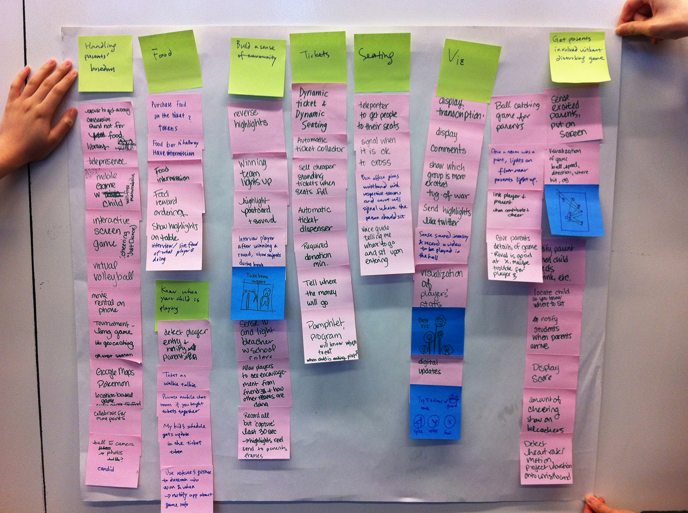
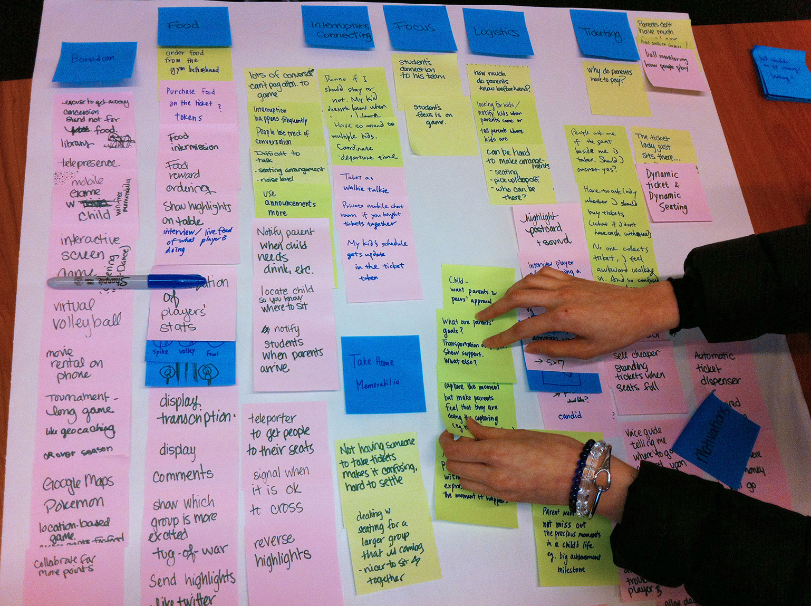

Video Sketch
Mar 2014 - May 2014
Interview
Affinity Diagramming
Brainstorming
Video Making
Melissa Lee
Nissa Nishiyama
Going to watch your team play is always exciting. The atmosphere and energy can't be recreated at home, so it is always disappointing when you have to step out and miss an exciting moment in the game. That's where ReLive comes in.
In this project, we use sensors to come up with a ubiquitous computing solution.
Using sensors in your seat and phone, ReLive detects when you are away from your seat. ReLive plays back recordings of things you missed using your smartphone. The recordings come from cameras and microphones placed around the stadium, so the experience of watching is much more like being there in person than simply watching the game on TV.
We went to a volleyball tournament in Pittsburgh. After a 3-hour observation and 6 interviews in between games, we got a lot of data. We consolidated the data with affinity diagramming, and we were able to identify the pain points.

With problems identified, we did a lot of brainstorming and bodystorming to come up with ideas. I categorized some categories to group these ideas.


After selecting 6 top ideas, we speed dated with our target users with storyboards to narrow down and improve our design ideas. We asked them how they think of the idea, and observed their reactions, because what they say sometimes doesn't mean what they really think. Interestingly, what people like are sometimes very different from my own preference.
"I am not the user", I should always keep in mind.


Credit: "history icon" in img/relive/thumb.jpg: http://thenounproject.com/term/history/11143/